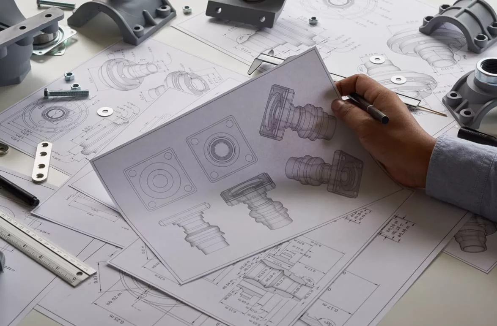

Es una carrera centrada en el diseño, la construcción y la gestión de edificios y otras infraestructuras. Combina conocimientos técnicos, científicos y tecnológicos para desarrollar proyectos seguros, eficientes y sostenibles. Sus profesionales participan en todas las fases de una construcción, desde la planificación hasta su ejecución.

Es una disciplina científica que estudia cómo funciona el universo y las leyes que rigen la materia, la energía, el espacio y el tiempo. Combina teoría, experimentación y matemáticas para comprender los fenómenos naturales. Ofrece múltiples salidas profesionales en investigación, tecnología, enseñanza e innovación.
Es una carrera que combina creatividad, tecnología e ingeniería para diseñar y desarrollar nuevos productos. Se centra en crear soluciones innovadoras, funcionales, estéticas y adaptadas a las necesidades de las personas. Sus profesionales trabajan en ámbitos como el diseño, la fabricación, los materiales y el desarrollo industrial.
